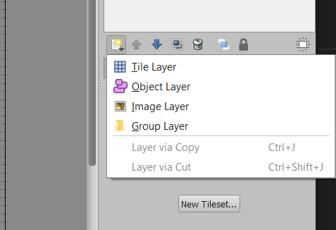
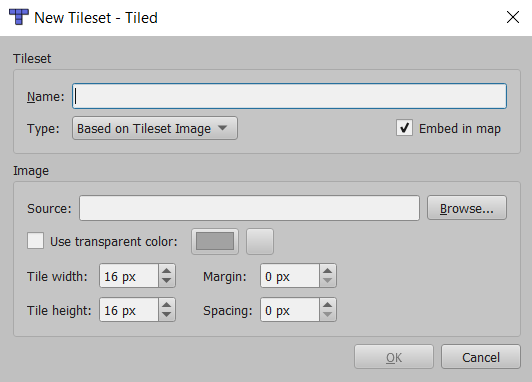
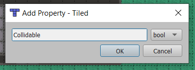

This guide covers how to make a top down orthogonal tilemap with Tiled for the Wolfie2d game engine.
Create a new Tilemap. For the case of this guide you should choose an orthogonal tilemap. Wolfie2D expects a Right Down render order, so you should make sure that is what is selected. After that, pick your map size and tile size.
Save your project as whatever name you want, but make sure to save it into its own folder. This will be important later.
Once you're in your project, create a second tiled layer.
Next, rename your layers to Walls, for the top one, and Floor, for the bottom one.
Now, create a tileset:
Make sure embed in map is selected for this, and be sure to put your image in the same folder as the tilemap. This is important for later when we export the project to a json format, and the file reference to the image is written to the json file.
Now you can create your map
For a basic top-down tilemap, not much specific setup is needed. The only thing you are required to do is to add a Custom Property to each of the tiled layers called "Collidable" of type boolean. If the layer can be collided with, set the value to be true.
With this step done, you're all set! Export your tilemap to JSON, then move the JSON file along with the tileset image to your project assets folder.